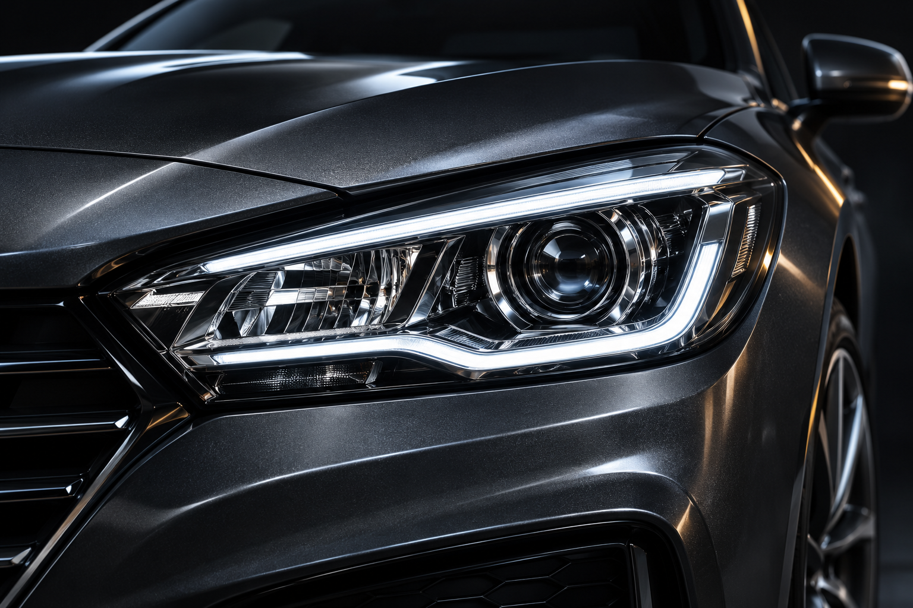

01
Obnova površine
Za požutele i matirane farove. Obrada spoljašnjeg sloja prilagođava se stanju površine, kako bi se vratila njena bistrina.
BISTRINA
JASNIJI POGLED. BOLJI IZGLED.
Požuteli i mutni farovi ne moraju da budu kraj priče. Otkrij šta pažljiva reparacija može da promeni.
01 — USLUGE
Zamućena površina skriva ono što je ispod.
Obnova počinje pažljivim pregledom i izborom
odgovarajuće obrade.
Za požutele i matirane farove. Obrada spoljašnjeg sloja prilagođava se stanju površine, kako bi se vratila njena bistrina.
BISTRINAPrecizna završna obrada za glađu površinu i čistiji izgled. Posebna pažnja posvećuje se sitnim tragovima i nepravilnostima.
PRECIZNOSTZaštita obrađene površine važan je deo obnove. Odgovarajući način zaštite bira se u okviru dogovorenog tretmana.
NEGAⓘ Svaki far ima svoju priču. Mogućnosti obnove i cenu potvrđujemo nakon pregleda.
02 — POGLEDAJ RAZLIKU
Povuci klizač i istraži kako bistrina površine menja izgled fara.
— Manje zamućenja na površini
— Jasnije vidljivi detalji fara
— Svežiji izgled prednjeg dela vozila
Ilustrativna simulacija na generisanom vizualu. Nije fotografija izvedenog rada niti obećanje rezultata.
03 — POSTUPAK
Jasan dogovor. Pažljiva obrada.
Svaki korak ima svoju ulogu.
Procenjujemo stanje farova i dogovaramo obim rada, cenu i termin.
Priprema površine i zaštita okolnih delova prethode pažljivoj obradi.
Završna obrada, dogovorena zaštita i pregled rezultata pre preuzimanja.
DOBRO JE ZNATI
Odgovori pre prvog dogovora.
Ako je spoljašnja površina požutela, matirala ili ima sitne ogrebotine, obnova može pomoći. Naprsline, vlaga u kućištu i kvarovi elektronike zahtevaju zaseban pregled. Stanje fara određuje šta je moguće uraditi.
Cena zavisi od stanja farova i potrebne obrade. Za procenu pripremi marku, model i godište vozila, kao i jasne fotografije oba fara. Konačan dogovor sledi nakon pregleda.
Vreme rada zavisi od oštećenja i postupka obnove. Trajanje i termin se dogovaraju nakon procene, pre početka radova.
Ne. Spoljašnja obrada ne rešava prodor vode ili problem sa zaptivanjem. Ako se far magli iznutra, to treba posebno navesti pri pregledu.
Koristi blaga sredstva namenjena pranju automobila i meku krpu. Izbegavaj grube sunđere i abrazivne paste. Uputstva za pranje neposredno posle tretmana zavise od završne zaštite.
SLEDEĆI KORAK
Pripremi kratku poruku sa podacima o vozilu. Za procenu su korisne i fotografije oba fara na dnevnom svetlu.
Upit možeš pripremiti i kopirati. Slanje i rezervacija termina još nisu dostupni.